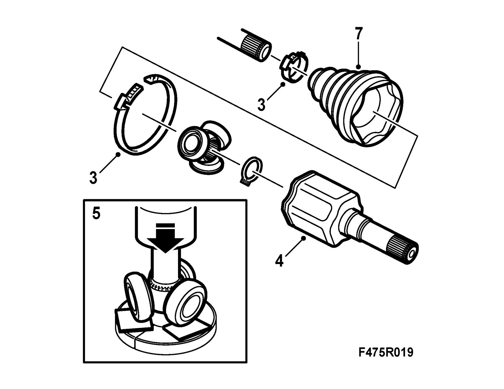
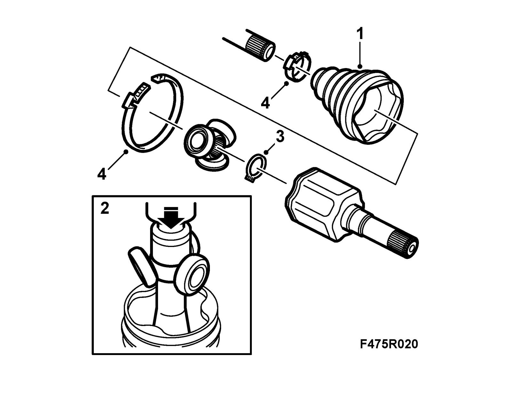

Inboard Drive Shaft Universal Joint, Automatic
Inboard drive shaft universal joint, automaticTo remove
Important
The drive assembly is very susceptible to dirt.
1. Clean the drive shaft thoroughly.
2. Set up the drive shaft in a vice with soft jaws.
3. Undo the clamping ring on the boot.

4. Remove the inboard universal joint and clean away the grease.
5. Set up the shaft in a hydraulic press. Use 87 91 212 Puller ring for support and plastic tiles to protect the bearings. Use a 17 mm socket as a drift.
6. Remove the boot from the drive shaft.
To fit
1. Fit the boot onto the drive shaft.

2. Press in the tripod to the edge of the groove in a hydraulic press with a 30 mm socket.
3. Fit the circlip.
4. Fill the universal joint with 200 g new grease, 87 92 780 Drive shaft grease, aut, and connect it to the tripod. Close both clamping rings. Use 30 16 235 Pliers.